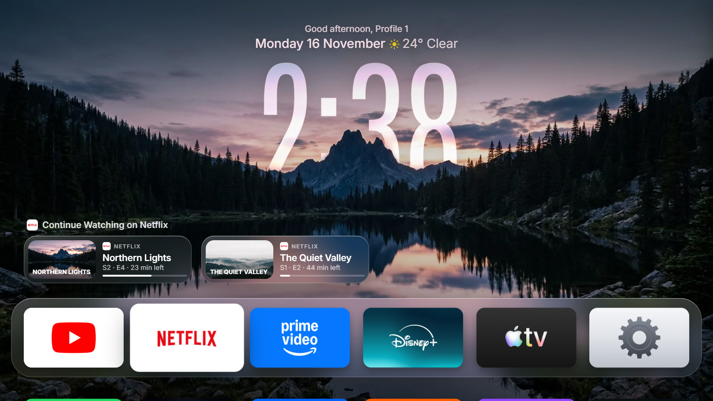

For Android TV & Google TV
PureTV
Clean your TV, remove the ads, and give it a beautiful tvOS‑inspired home.
✓
Backed up first
✓
Nothing deleted
✓
One‑click restore

Made with
by
Crazified Studios
github.com/advik-srivastava/puretv